专题4.4 多边形和圆的初步认识
专题4.4 多边形和圆的初步认识


教学目标 | 1. 结合实例认识多边形、正多边形、圆及扇形，掌握顶点、对角线、圆心角等相关概念，丰富几何直观认知。 2. 经历从现实世界抽象平面图形的过程，能在情境中识别相关图形，发展抽象与表达能力。 3. 探索多边形对角线规律，能根据扇形与圆的关系求圆心角度数，提升推理能力。 |
教学重难点 | 1.重点 （1）核心是多边形和圆的相关概念，需清晰掌握多边形的边、内角、对角线及圆的圆心、半径等要素定义。 （2）关键是多边形对角线规律的探索与应用，以及扇形圆心角度数的计算方法。 2.难点 （1）难点在于多边形对角线条数规律的推导，学生难以从具体实例中抽象出通用公式。 （2）难点在于结合扇形与圆的整体关系计算圆心角，对“部分与整体”的比例关系理解不透彻。 |

知识点01 多边形
1.定义：由若干条不在同一条直线上的线段首尾顺次相连组成的封闭平面图形。
2.相关概念：顶点是相邻两条边的公共端点；边是组成多边形的各条线段；内角是相邻两条边所组成的角；对角线是连接不相邻两个顶点的线段。
3.性质：n边形有n个顶点、n条边、n个内角。从n边形的一个顶点出发，可以引出（n-3）条对角线，n边形对角线的总条数为n(n - 3)/2（n≥3，且n为整数）。
4.正多边形：各边相等、各角也相等的多边形叫作正多边形。
【即学即练】
1．过 边形的一个顶点最多可以画出
边形的一个顶点最多可以画出 条对角线，则的值是 ．
条对角线，则的值是 ．
2．如果过某多边形的一个顶点的对角线有9条，则该多边形对角线一共有 条．
3．某中学八年级数学课外兴趣小组在探究：“边形 共有多少条对角线”这一问题时，设计了如下表格．请你完成探究过程并解决问题：
共有多少条对角线”这一问题时，设计了如下表格．请你完成探究过程并解决问题：

多边形的边数 | 4 | 5 | 6 | … | n |
从多边形的一个顶点出发 | 1 | 2 | ______ | … | _____ |
多边形对角线的总条数 | 2 | 5 | ______ | … | _____ |
(1)请在表格中的横线上填上相应的结果；
(2)十边形有__________条对角线；
(3)过多边形的一个顶点的所有对角线条数与这些对角线分多边形所得的三角形个数的和可能为2023吗？若能，请求出这个多边形的边数；若不能，请说明理由．
多边形的边数 | 4 | 5 | 6 | … | n |
从多边形的一个顶点出发 | 1 | 2 | 3 | … | 9 |
多边形对角线的总条数 | 2 | 5 |
| … |
|


4．夏夏和数学小组的同学们研究多边形对角线的相关问题，邀请你也加入其中，请仔细观察下面的图形和表格，并回答下列问题：

多边形的顶点数 | 4 | 5 | 6 | 7 | 8 | …… |
|
从一个顶点出发的对角线的条数 | 1 | 2 | 3 | 4 | 5 | …… | ① |
多边形对角线的总条数 | 2 | 5 | 9 | 14 | 20 | …… | ② |
(1)观察探究：请自己观察上面的图形和表格，并用含n的代数式将上面的表格填写完整，其中①________；②________.
(2)拓展应用：
有一个76人的代表团，由于任务需要每两人之间通1次电话（且只通1次电话），他们一共通了多少次电话?
知识点02 圆
1.定义：平面上，一条线段OA绕着它固定的一个端点O旋转一周，另一个端点A所形成的图形。
2.相关概念：圆心是固定的端点O；半径是线段OA；圆弧是圆上任意两点间的部分；扇形是由一条弧和经过这条弧的端点的两条半径所组成的图形；圆心角是顶点在圆心的角。
3.扇形圆心角的度数：将一个圆分割成若干个扇形，这些扇形的圆心角度数之和等于360°，每一个扇形圆心角的度数=360°×这个扇形的圆心角占周角的百分比。
【即学即练】
1．下列说法：①直径是弦；②半径相等的圆叫同心圆；③长度相等的两条弧是等弧．其中正确的是（ ）
A．②③ B．①② C．①③ D．①
4．某中学原计划修一个半径为10米的圆形花坛，为使花坛修得更加美观，决定向全校征集方案，在众多方案中最后选出两种方案：
方案A如图1所示，先画一条直径，再分别以两条半径为直径修两个圆形花坛；
方案B如图2所示，先画一条直径，然后在直径上取一点，把直径分成2：3的两部分，再以这两条线段为直径修两个圆形花坛；（花坛指的是图中实线部分）

(1)如果按照方案A修，修的花坛的周长是 ．（保留π）
(2)如果按照方案B修，与方案A比，省材料吗？为什么？（保留π）
(3)如果按照方案B修，学校要求在5天内完成，甲工人承包了此项工程，甲每天能完成工程的 ，他做了1天后，发现不能完成任务，就请乙来帮忙，乙的速度是甲的2倍，乙加入后，甲的速度也提高了
，他做了1天后，发现不能完成任务，就请乙来帮忙，乙的速度是甲的2倍，乙加入后，甲的速度也提高了 ，结果正好按时完成任务，若修1米花坛可得到10元钱，修完花坛后，甲，乙各得到多少钱？（π取3）
，结果正好按时完成任务，若修1米花坛可得到10元钱，修完花坛后，甲，乙各得到多少钱？（π取3）

题型01 多边形的概念与分类
【典例1】如图所示的图形中，多边形的个数为（ ）

A．2 B．3 C．4 D．5
【变式1】下列多边形中，不是凸多边形的是（ ）
A．
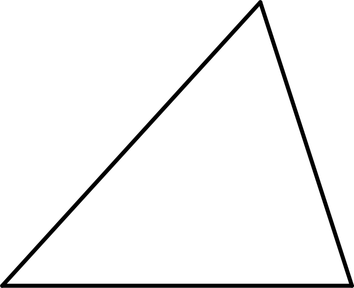
B．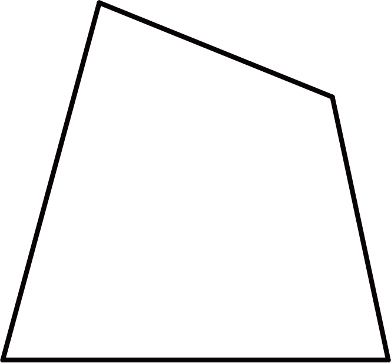
C．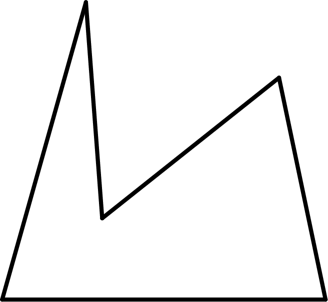
D．
【变式2】下列图形中不是多边形的是（ ）
A． B．
B． C．
C． D．
D．
【变式3】下列图形中，属于多边形的有（ ）
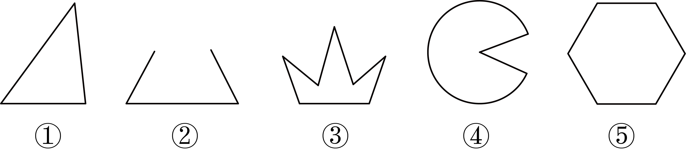
A． 个 B．
个 B． 个 C．
个 C． 个 D．
个 D． 个
个
题型02 多边形的对角线的条数问题
【典例2】若一个多边形从一个顶点出发可引出6条对角线，则这个多边形是 边形．
【变式1】过某多边形的一个顶点可以引2024条对角线，则这个多边形的边数是 条
【变式2】从一个多边形的任何一个顶点出发都只有4条对角线，则这个多边形的对角线共有 条．
【变式3】过 边形的一个顶点，有8条对角线，
边形的一个顶点，有8条对角线， 边形没有对角线，五边形有
边形没有对角线，五边形有
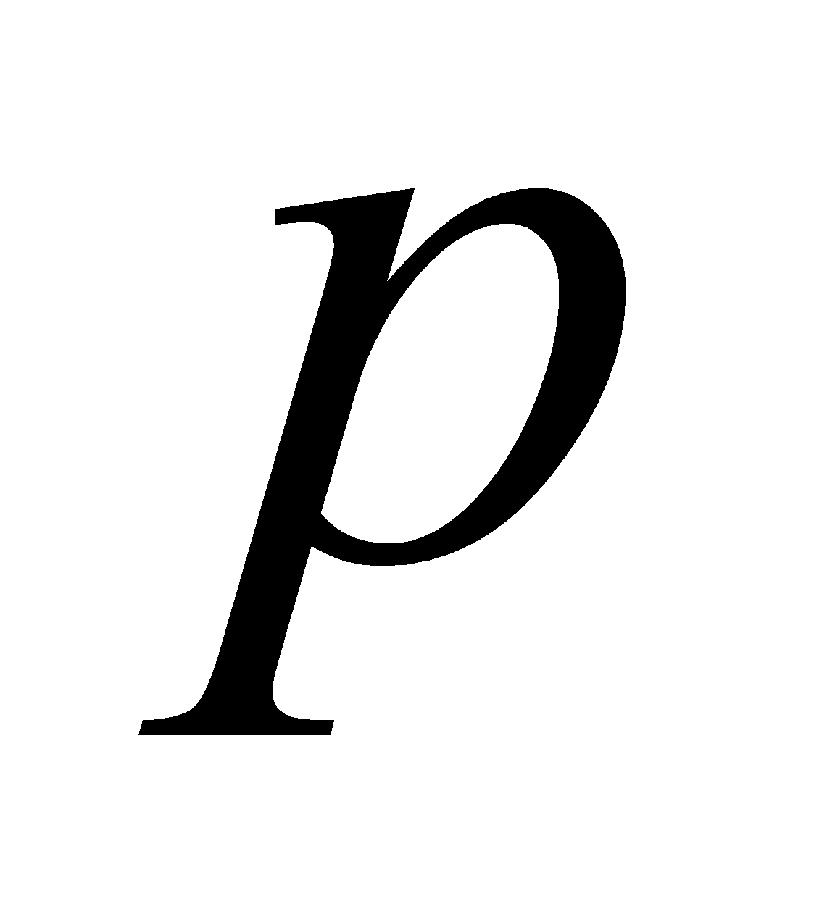
条对角线，则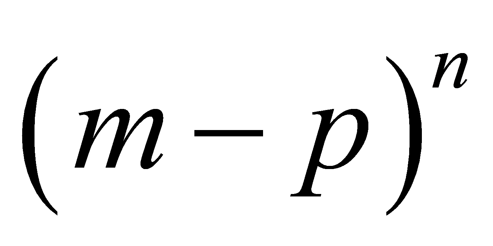
的值为 ．题型03 多边形截角后的边数问题
【典例3】把一张形状是四边形的纸片剪去其中某一个角，剩下的部分的形状不可能是（ ）
A．三角形 B．四边形 C．五边形 D．六边形
【变式1】若一个多边形截去一个角后，变成五边形，则原来的多边形的边数可能为（ ）
A．5或6 B．4或5 C．3或4或5 D．4或5或6
【变式2】若一个四边形截去一个角后，可能为（ ）边形
A．4或5 B．3或4
C．3或4或5 D．4或5或6
【变式3】如图，四边形 去掉一个
去掉一个
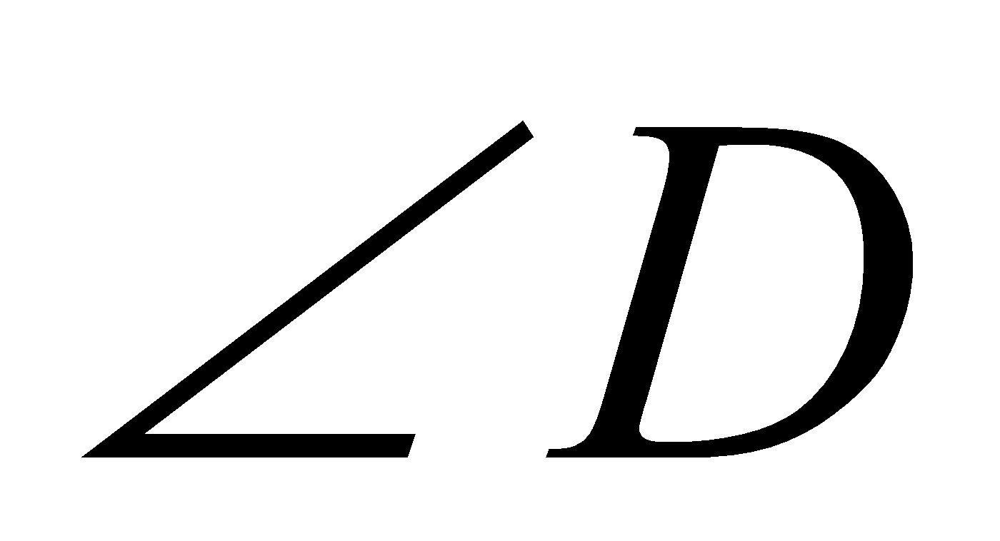
后，剩下的新图形不可能是（ ）边形．
A．三边形 B．四边形 C．五边形 D．六边形
题型04 对角线分成的三角形个数问题
【典例4】如图所示的蜂巢由许多六边形构成，将六边形三角剖分，可以分割成三角形的个数为 ．

【变式1】若从这个n边形的一边上任意取一点（不是顶点），分别连接这个点与其余各顶点，可以把n边形分成 个三角形．
【变式2】若某多边形的一个顶点与和它不相邻的其他各顶点连接，可将多边形分成7个三角形，则该多边形的总对角线条数为 ．
【变式3】如图所示，按某种方法将多边形分割成若干个三角形．图①中的三角形可分割出2个三角形，图②中的四边形可分割出3个三角形，图③中的五边形可分割出4个三角形，……．以此类推，n边形可分割出 个三角形．

题型05 圆的基本概念辨析
【典例5】下列说法：①直径是弦；②弦是直径；③半圆是弧，弧不一定是半圆；④优弧一定大于劣弧；⑤直径是圆中最长的弦．其中正确的说法为（ ）
A．①③④ B．①③⑤ C．②③⑤ D．③④⑤
【变式1】下列说法正确的是（ ）
A．直径是弦，弦是直径
B．半圆是弧
C．无论过圆内哪一点，只能作一条直径
D．长度相等两条弧是等弧
【变式2】下列说法：①弦是直线；②圆的直径被该圆的圆心平分；③过圆内一点P的直径仅有一条；④弧是圆的一部分．其中正确的有（ ）
A．1个 B．2个 C．3个 D．4个
【变式3】说法：①直径是圆中最长的弦，弦是直径；②半径相等的两个半圆是等弧；③半圆是弧，但弧不一定是半圆；④长度相等的两条弧是等弧；⑤经过圆内一定点可以作无数条直径．其中正确的有（ ）
A．1个 B．2个 C．3个 D．4个
题型06 圆心角概念辨析及简单运算
【典例6】如图，在 中，劣弧
中，劣弧 的度数为
的度数为 ，则圆心角
，则圆心角
 .
.

【变式1】如图，把一个圆分成三个扇形，你能求出这三个扇形的圆心角吗？

【变式2】如图，圆心角 ．
．

(1)判断 和
和 的数量关系，并说明理由；
的数量关系，并说明理由；
(2)若
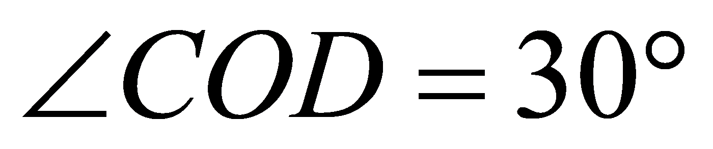
，求 的度数．
的度数．题型07 圆的周长和面积问题
【典例7】一个运动场如图，两端是半圆形，中间是长方形．这个运动场的周长是多少米？面积是多少平方米？

【变式1】如图所示，半径为1厘米的小圆盘（娃娃脸）沿着长方形内壁，从 点出发不停滚动（无滑动），最后到原来的位置．小圆盘在
点出发不停滚动（无滑动），最后到原来的位置．小圆盘在  、
、 、
、 位置是怎样的，请你计算一下并画出示意图．
位置是怎样的，请你计算一下并画出示意图．

【变式2】如图，是的直径，把分成几条相等的线段，以每条线段为直径分别画小圆，设
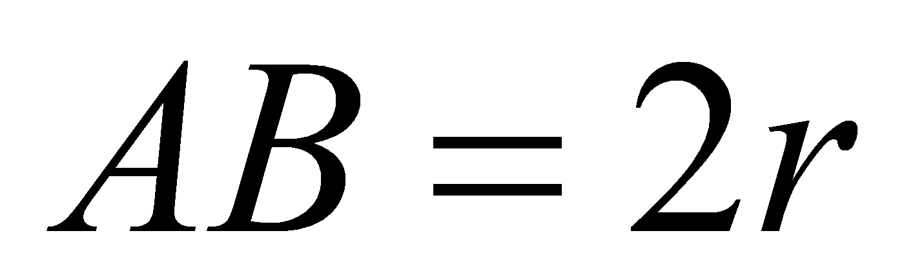
，那么的周长 ，的面积
，的面积 ．
．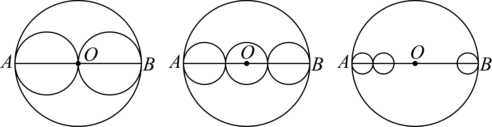
(1)探究：①把分成两条相等的线段，每个小圆的周长 ；
；
②把分成三条相等的线段，每个小圆的周长记作 ，
，
③把分成四条相等的线段，每个小圆的周长
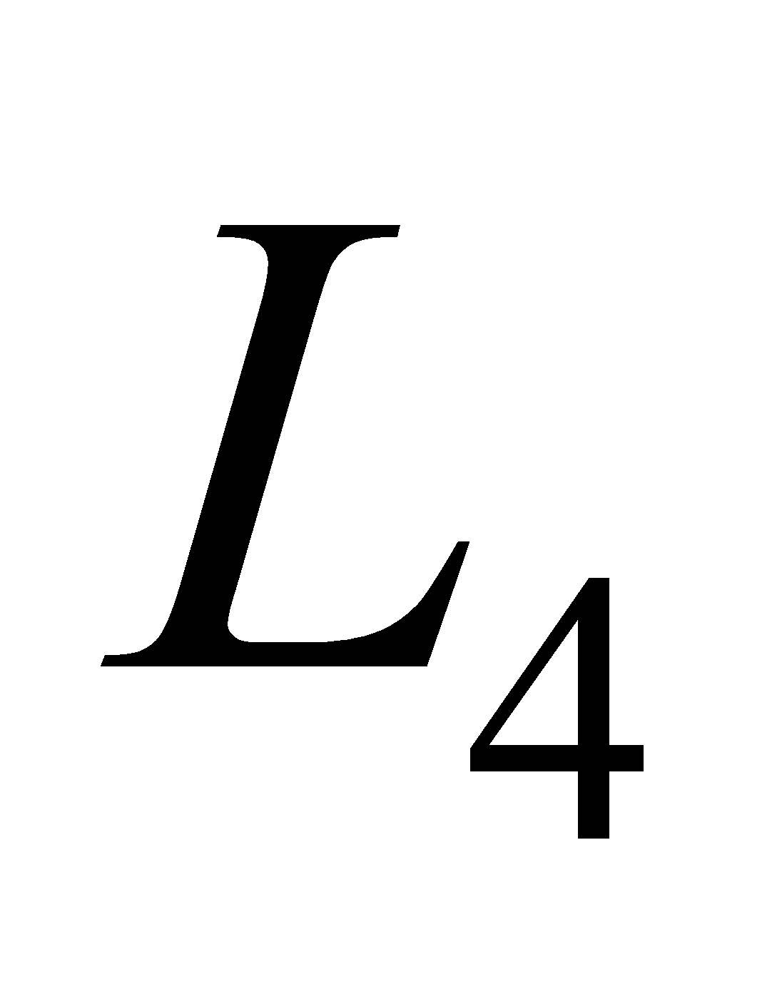
，…④把分成条相等的线段，每个小圆的周长 ．
．
分别求出，，；
(2)类比探究：仿照（1）的探索过程，当把大圆直径平均分成等分时，以每条线段为直径画小圆，求每个小圆的面积 与大圆面积
与大圆面积 之间的关系．
之间的关系．

一、单选题
1．一个八边形从一个顶点出发，引出对角线的条数是（ ）
A．2 B．3 C．4 D．5
2．下列说法正确的是（ ）
A．圆的周长都相等
B．圆上任意两点间的部分叫做圆弧
C．顶点在圆上的角叫做圆心角
D．由一条弧和经过这条弧的两个端点的两条线段组成的图形叫做扇形
3．过多边形的一个顶点的所有对角线把这个多边形分成了2025个三角形，则这个多边形的边数是（ ）
A．2024 B．2025 C．2026 D．2027
4．从五边形的一个顶点出发，可以画m条对角线，它们将五边形分成n个三角形，则 的值为（ ）
的值为（ ）
A．5 B．6 C．7 D．8
5．如图， 个正方形的边长均为
个正方形的边长均为
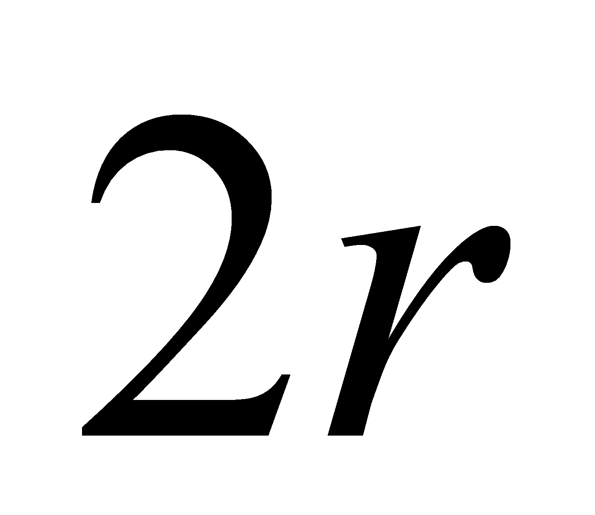
，则涂色部分的面积是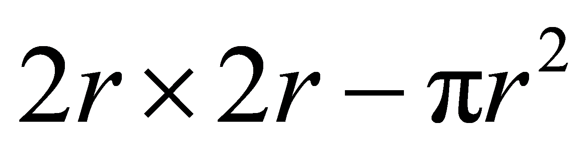
的图有（ ）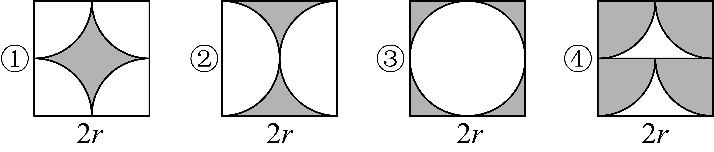
A． 个 B．
个 B． 个 C．
个 C． 个 D．个
个 D．个
6．如图，某同学探究n边形的内角和公式，首先将以顶点 为端点的对角线
为端点的对角线
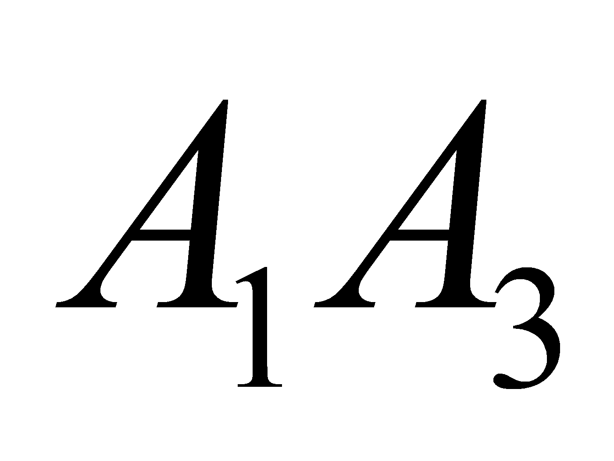
、 、
、 、
、 、
、 、
、 连接，将此n边形分割成
连接，将此n边形分割成 个三角形，然后由每个三角形的内角和为
个三角形，然后由每个三角形的内角和为 ，可得n边形的内角和为
，可得n边形的内角和为 ．该同学的上述探究方法所体现的数学思想是（ ）
．该同学的上述探究方法所体现的数学思想是（ ）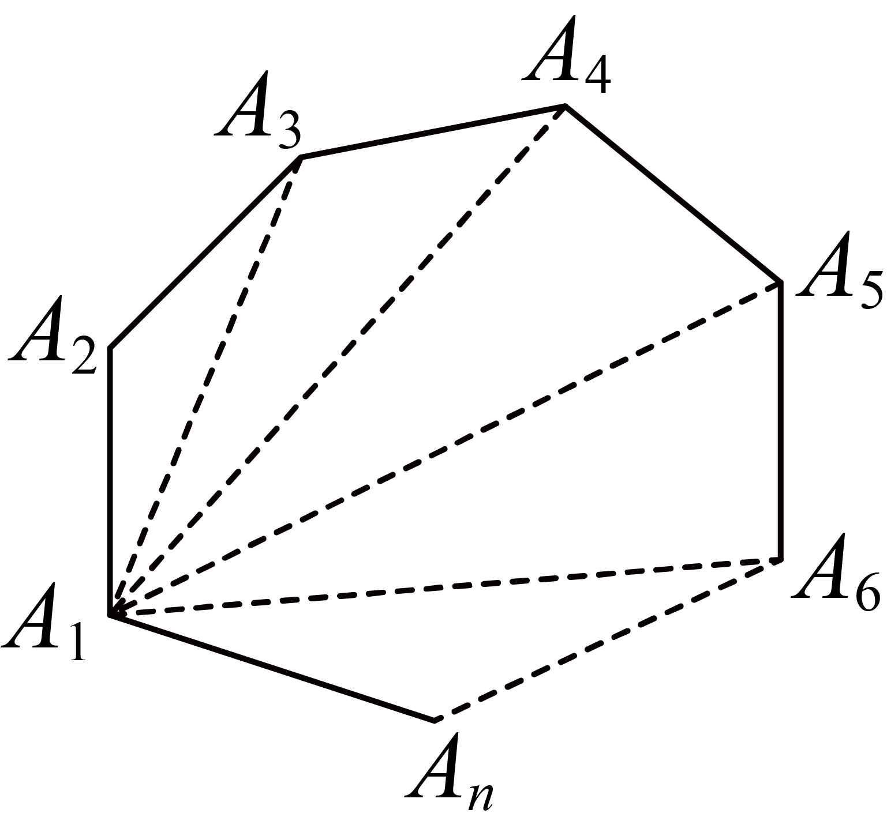
A．分类讨论 B．公理化 C．类比 D．转化
二、填空题
7．八边形共有 条对角线．
8．连接多边形不相邻两个顶点的线段叫做多边形的对角线，若从多边形的一个顶点可以引出九条对角线，则这个多边形是 边形．
9．在 中，点B，O，C和点A，O，D分别在同一条直线上，则图中 是弦， 是直径， 是以A为端点的劣弧， 是以A为端点的优弧．（把满足要求的答案全部填上）
中，点B，O，C和点A，O，D分别在同一条直线上，则图中 是弦， 是直径， 是以A为端点的劣弧， 是以A为端点的优弧．（把满足要求的答案全部填上）

10．从一个多边形的同一个顶点出发，分别连接这个顶点与其余各顶点，可以把这个多边形分割成若干个三角形．根据下面的图形反映出来的规律，n边形从一个顶点出发被分割成的三角形的个数为 ．

11．用对角线把多边形分成几个三角形，叫做“多边形的三角剖分”．如图，凸四边形 ，有两种剖分方式（如图示）；20世纪，数学家乌尔班发现并证明了下面的公式：
，有两种剖分方式（如图示）；20世纪，数学家乌尔班发现并证明了下面的公式： （n表示凸n边形的三角剖分数）请你用上面的公式计算
（n表示凸n边形的三角剖分数）请你用上面的公式计算 ．
．
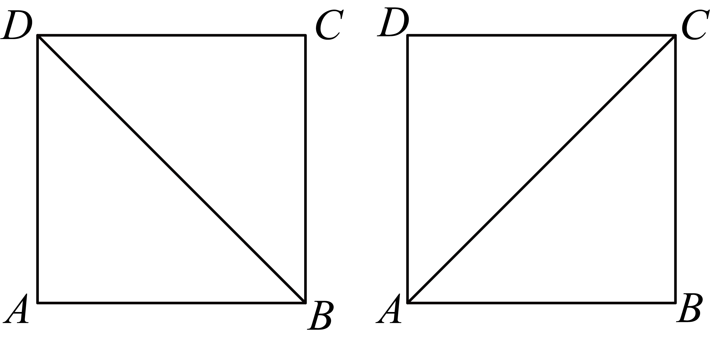
12．工厂生产一种图①所示的螺丝垫圈，其示意图如图②所示．已知 ，则这个螺丝垫圈底部圆环的面积为
，则这个螺丝垫圈底部圆环的面积为
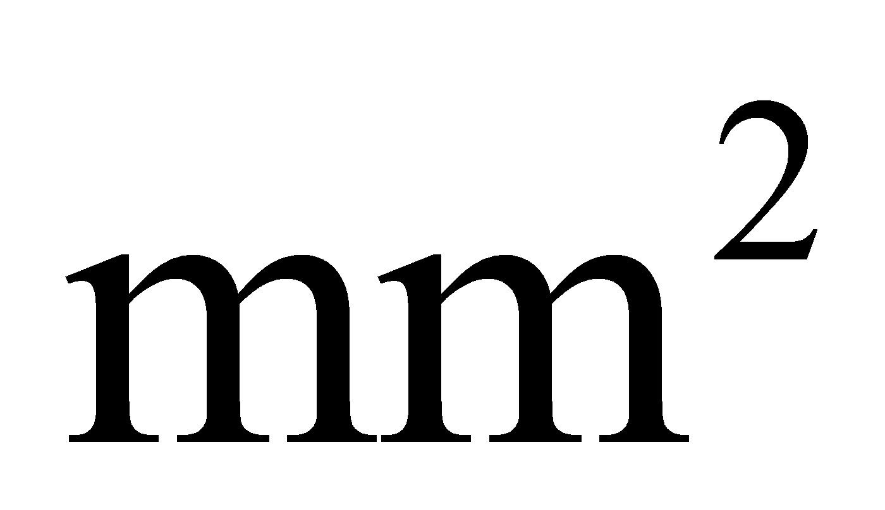
（结果保留 ）．
）．
三、解答题
13．如图所示，分别以AB，BC和AC为直径作弧．已知 ，
，
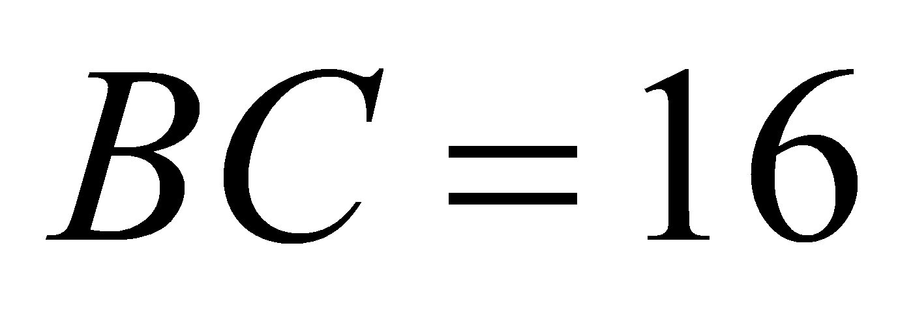
．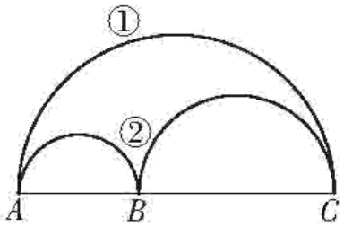
(1)比较①②两条从点A到点C的路线，走哪条路更近？
(2)如果 ，
， ，那么①②两条从点A到点C的路线的长度相比，有什么变化呢？你得到了什么样的结论？
，那么①②两条从点A到点C的路线的长度相比，有什么变化呢？你得到了什么样的结论？
14．如图所示的多边形分别为正五边形、正六边形、正十边形、正十二边形．
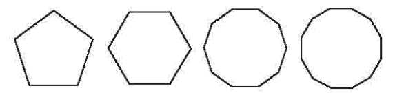
(1)在以上各正多边形中分别任选一个顶点作对角线，把各多边形分割为若干个三角形．
(2)根据（1）中你的分割结果提出猜想，并说明过正三十边形的一个顶点作对角线，能把正三十边形分割成多少个三角形．
(3)在（2）中，当把正三十边形换为任意三十边形时，结论是否还能成立？请说明理由．
15．探究与归纳：
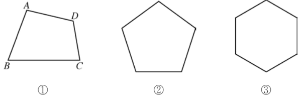
(1)如图①，经过点A可以作1条对角线；经过点B可以作 条对角线；经过点C可以作 条对角线；经过点D可以作 条对角线．通过以上分析和总结，图①共有 条对角线．
(2)运用（1）的分析方法，可得图②共有 条对角线，图③共有 条对角线．
(3)对于n边形（ ），共有 （用含n的式子表示）条对角线．
），共有 （用含n的式子表示）条对角线．
(4)对于n边形，从同一顶点出发的对角线把该多边形共分割成 （用含n的式子表示）个三角形．
16．【找规律】阅读：平面内，由不在同一直线上的n条线段首尾顺次连接而成的图形叫作n边形．如： 时叫作三角形，
时叫作三角形，
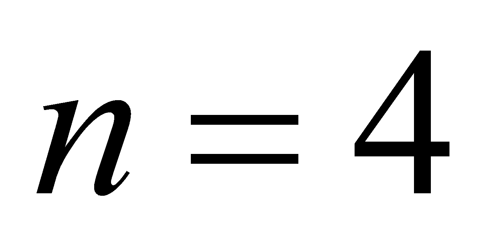
时叫作四边形， 时叫作五边形……连接n边形中不相邻的两个顶点之间的线段叫作n边形的对角线．如图，线段
时叫作五边形……连接n边形中不相邻的两个顶点之间的线段叫作n边形的对角线．如图，线段 ，
， 是四边形的对角线．
是四边形的对角线．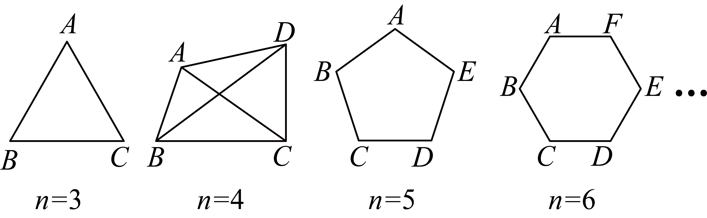
(1)从五边形
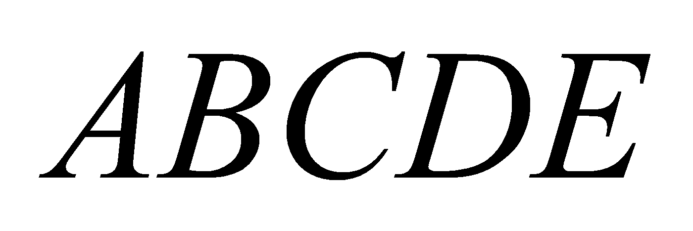
的一个顶点A出发，可以引 条对角线；从六边形的一个顶点可以引 条对角线；……从n边形的一个顶点可以引 条对角线；(2)五边形一共有 条对角线；
(3)n边形一共有 条对角线．
17．连接多边形不相邻的两个顶点的线段，叫做多边形的对角线，如图（1），、 是五边形的对角线．思考下列问题：
是五边形的对角线．思考下列问题：
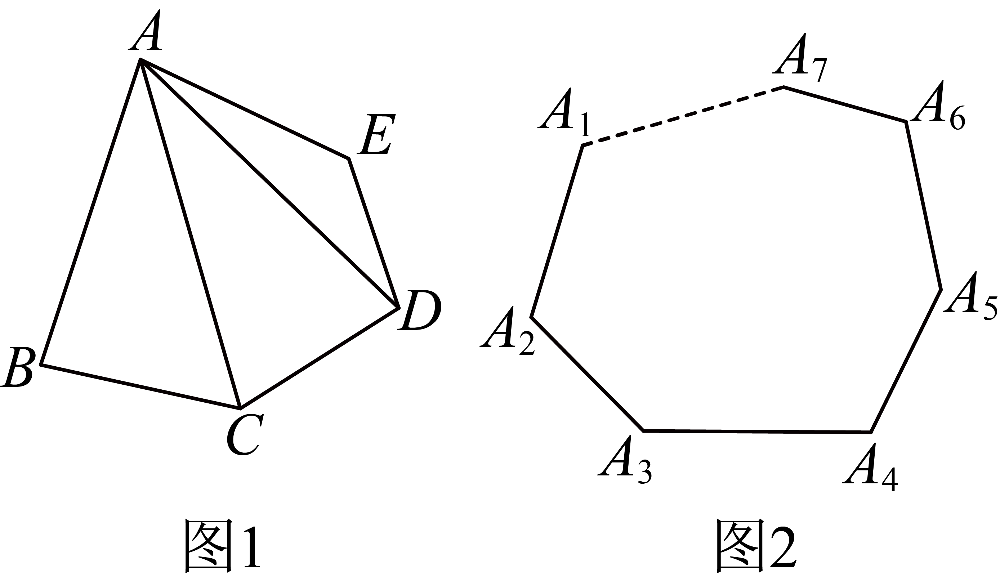
(1)如图（2）， 边形
边形 中，过顶点可以画 条对角线，它们分别是 ；过顶点
中，过顶点可以画 条对角线，它们分别是 ；过顶点
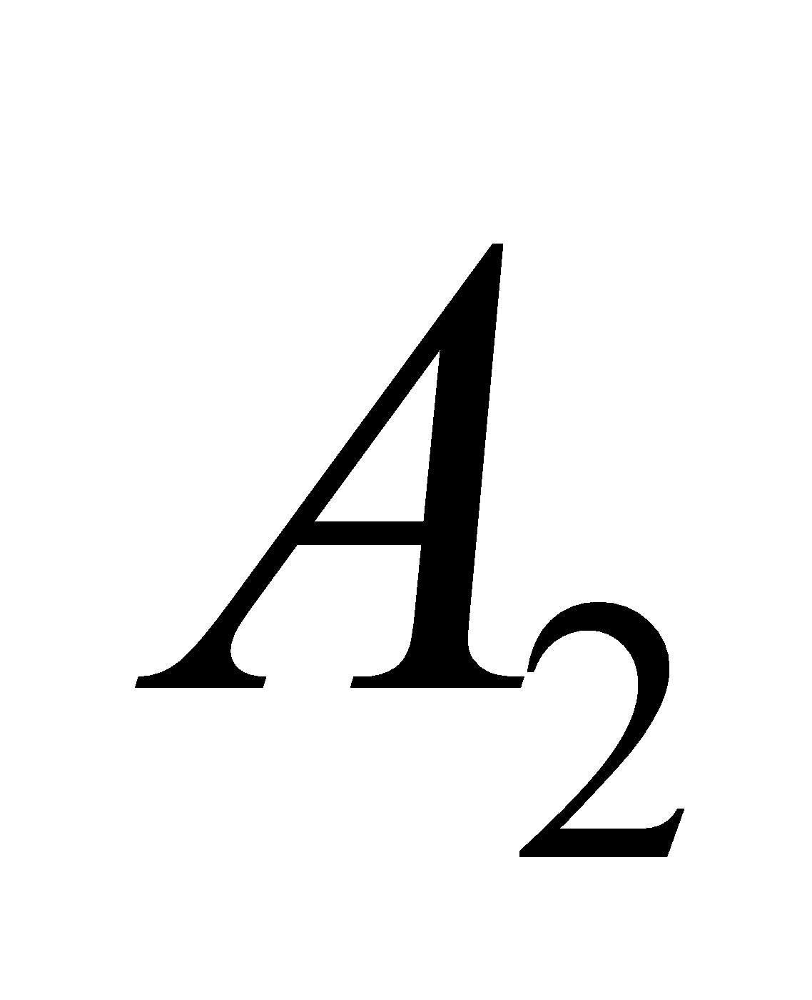
可以画 条对角线，过顶点 可以画 条对角线．
可以画 条对角线．(2)过顶点的对角线与过顶点的对角线有相同的吗？过顶点的对角线与过顶点的对角线有相同的吗？
(3)在此基础上，你能发现边形的对角线条数的规律吗？
18．项目学习：生活中的密铺
【描述定义】在数学中用形状、大小完全相同的平面图形进行拼接，不留空隙且不重叠地铺满整个平面，称为平面图形的密铺（或称为平面镶嵌）．在现实生活中，地砖、墙砖、蜂巢等都用到了密铺的原理．
【知识储备】1．对于正边形，每个内角都相等，那么一个内角的度数是____________；
2．密铺的条件：当公共顶点处所有角的和为____________ ，并使相等的边重合．
，并使相等的边重合．
【任务一：寻找密铺】
1．下列正多边形中，能够单独密铺平面的是（ ）．（多选）
A．正三角形 B．正方形 C．正五边形 D．正六边形 E．正八边形
2．公园的一段甬道是用相同的五边形地砖拼铺而成的，如图1是拼铺图案的一部分，图2为图1中抽象出的一个五边形，其中
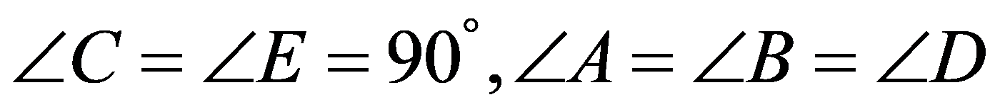
，则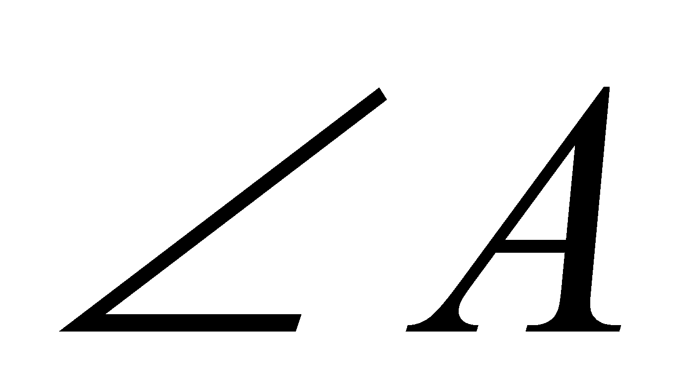
的度数为____________．
【任务二：创作密铺】
七（1）班数学“智慧小组”提出：同时用“正方形+正八边形”的密铺方案，
数学“挑战小组”提出：同时用“正方形＋正六边形”的密铺方案；
请你思考并判断哪个小组方案可行，可进行如下验证：
验证方案：
1．“智慧小组”方案（正方形+正八边形）：设正方形x个，正八边形y个，根据题意，可得方程____________，可以找到方程的正整数解为____________；
2．“挑战小组”方案（正方形+正六边形）：设正方形m个，正六边形n个，根据题意，可得方程____________，发现方程____________（填：有或无）正整数解；
结论：由上可得，可行的方案是：________________________．
【任务三：应用密铺】
某小区广场计划用不同的正多边形地砖组合密铺（边长相同）．已有正三角形地砖，现打算购买正方形或正六边形地砖，与已有正三角形地砖进行共顶点组合密铺．请你设计两种共顶点组合密铺方案，并画出示意图．
方案1：用两种正多边形（只画一种情况），
方案2：用三种正多边形．